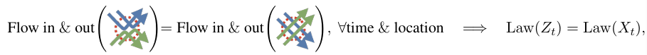
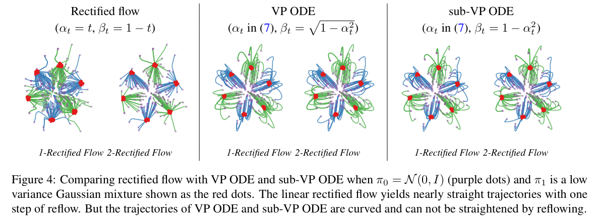
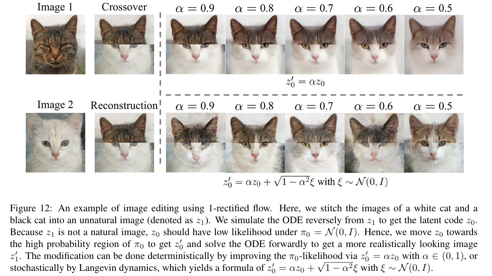
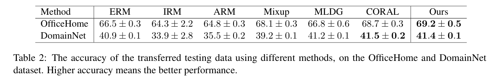

全文翻译
摘要
我们提出了整流流（rectified flow），这是一种出奇简单的方法，用于学习（神经）常微分方程（ODE）模型，以在两个经验观测分布$\pi_0$和$\pi_1$之间进行传输，从而为生成式建模、域转移以及涉及分布传输的各种其他任务提供了统一的解决方案。整流流的核心思想是，学习常微分方程，使其尽可能地沿着连接从$\pi_0$和$\pi_1$中抽取的点的直线路径进行传输。这一目标通过求解一个简单的非线性最小二乘优化问题得以实现，该问题可以轻松扩展到大型模型，且无需在标准监督学习之外引入额外参数。直线路径之所以特殊且更受青睐，是因为它们是两点之间的最短路径，并且可以在无需时间离散化的情况下进行精确模拟，从而产生计算效率高的模型。我们证明，从数据中学习整流流的过程（称为整流），能够将$\pi_0$和$\pi_1$的任意耦合转化为一种新的确定性耦合，且可证明其凸传输成本不会增加。此外，递归应用整流操作，能让我们获得一系列路径越来越直的流，在推理阶段，这些流可以通过粗糙的时间离散化进行精确模拟。在实证研究中，我们发现整流流在图像生成、图像到图像的转换以及域适应等任务上表现卓越。特别是在图像生成和转换任务中，我们的方法能生成近乎直线的流，即使仅使用单个欧拉离散化步骤，也能产生高质量的结果。
1 引言
与监督学习相比，各种形式的无监督学习面临的共同难题是，缺乏可用于执行标准回归或分类任务的成对输入/输出数据。大多数无监督方法的核心，在于以某种方式找到来自两个分布的点之间有意义的对应关系。例如，生成对抗网络（GAN）和变分自编码器（VAE） 等生成模型试图将数据点映射到遵循简单基本（高斯）分布的潜在编码，通过这些潜在编码可以生成和操作数据。表示学习基于这样一种理念：如果一个足够平滑的函数能够将结构化数据分布映射到基本分布，那么它（很可能）会被赋予某种语义上有意义的解释，并对各种下游学习任务有所帮助。另一方面，域转移方法旨在找到映射，将来自两个不同数据分布（均通过经验观察得到）的点进行转移，以实现图像到图像的转换、风格迁移和域适应 等目的。所有这些任务都可以统一表述为寻找两个分布之间的传输映射：
传输映射问题：给定在$\mathbb{R}^d$上两个分布$X_0 \sim \pi_0$，$X_1 \sim \pi_1$的经验观测值，找到一个传输映射$T: \mathbb{R}^d \to \mathbb{R}^d$（期望在某种意义上是良好的或最优的），使得当$Z_0 \sim \pi_0$时，$Z_1 := T(Z_0) \sim \pi_1$，即$(Z_0, Z_1)$是$\pi_0$和$\pi_1$的一个耦合（也称为传输计划）。
根据如何表示和训练映射$T$，已经开发出了多种技术路线。在传统生成模型中，$T$被参数化为神经网络，并使用GAN式的极小极大算法或（近似）最大似然估计（MLE）进行训练。然而，GAN存在数值不稳定和模式崩溃的问题，并且需要大量的工程工作和人工调整，这些调整往往在不同的模型架构和数据集上无法很好地迁移。另一方面，对于复杂模型，MLE往往难以处理，因此需要诸如变分自编码器（VAE）中使用的近似变分或蒙特卡罗推理技术，或者像归一化流和自回归模型这样的特殊模型结构，以得到易于处理的似然性，这在表达能力和计算成本之间带来了艰难的权衡。
最近，通过将传输计划隐式表示为连续时间过程取得了进展，例如使用神经常微分方程（ODE）的流模型 以及由随机微分方程（SDE）构成的扩散模型 ；在这些模型中，训练一个神经网络来表示过程的漂移力，并在推理过程中使用数值ODE/SDE求解器来模拟该过程。其核心思想是，利用ODE/SDE的数学结构，连续时间模型可以高效训练，而无需依赖极小极大或传统的近似推理技术。最显著的例子是最近的基于分数的生成模型和去噪扩散概率模型（DDPM），我们将它们统称为去噪扩散方法。这些方法使我们能够训练大规模的基于扩散/SDE的生成模型，在图像生成方面，其在图像质量和多样性上均超越了GAN，且不存在不稳定性和模式崩溃的问题 。通过概率流ODE方法和DDIM，可以将学习到的SDE转换为确定性ODE模型，以实现更快的推理。
然而，与传统的一步模型（如GAN和VAE）相比，连续时间模型的一个关键缺点是推理时的计算成本较高：生成单个点（例如图像）需要使用数值求解器求解ODE/SDE，而这需要反复调用计算成本高昂的神经漂移函数。此外，现有的去噪扩散技术需要在复杂的设计空间中进行大量的超参数搜索，并且在经验和理论层面都还未被充分理解。
在现有方法中，生成式建模和域转移通常是分开处理的。通常需要扩展或定制生成式学习技术来解决域转移问题，例如Cycle GAN和基于扩散的图像到图像转换。一个自然地将这两个领域统一起来的框架是最优传输（OT），它提供了一系列技术，用于找到具有最小传输成本（形式为$\mathbb{E}[c(Z_1 - Z_0)]$，其中$c: \mathbb{R}^d \to \mathbb{R}$是成本函数）的最优耦合，从而在生成式学习和转移学习中都有自然的应用。然而，现有的OT技术在处理高维和大数据量的问题时速度较慢。此外，由于传输成本与实际学习性能并不完全一致，精确找到最优传输映射的方法并不一定具有更好的学习性能。
贡献
我们引入整流流，这是一种令人惊讶的、简单的解决传输映射问题的方法，它统一地解决了生成式建模和域转移问题。整流流是一种ODE模型，它通过尽可能地沿着直线路径将分布$\pi_0$传输到$\pi_1$。直线路径在理论上是最优的，因为它是两个端点之间的最短路径；在计算上也是最优的，因为它可以在无需时间离散化的情况下进行精确模拟。因此，具有直线路径的流弥补了一步模型和连续时间模型之间的差距。
在算法上，整流流通过一个简单且可扩展的无约束最小二乘优化过程进行训练，避免了GAN的不稳定性问题、MLE方法中难以处理的似然性问题，以及去噪扩散模型中复杂的超参数决策问题。从训练数据中获得整流流的过程具有吸引人的理论性质：1）对于所有凸成本$c$，生成的耦合的传输成本不会增加；2）使流的路径越来越直，因此在使用数值求解器时产生的误差更低。因此，通过一个重流过程，即使用从先前获得的整流流模拟的数据迭代地训练新的整流流，我们可以获得近乎直线的流，即使在最粗糙的时间离散化（即一个欧拉步骤）下也能产生良好的结果。我们的方法完全基于ODE，在概念上比基于SDE的方法更简单，在推理时间上也更快。
在实证方面，整流流在使用极少的欧拉步骤进行模拟时，就能在图像生成任务中产生高质量的结果（见图1顶行）。此外，只需进行一步重流，流就会变得近乎直线，因此在单个欧拉离散化步骤下也能产生良好的结果（图1第二行）。这大大优于标准的去噪扩散方法。在定量方面，我们在CIFAR10数据集上，针对一步快速扩散/流模型，取得了最先进的FID（4.85）和召回率（0.51） 。同样的算法在域转移任务（如图像到图像的转换，见图1底两行）和迁移学习中也取得了出色的结果。
| 图1：使用欧拉方法，步长为$1/N$，模拟$N$步时，图像生成（$\pi_0$：标准高斯噪声，$\pi_1$：猫脸，前两行）和人脸与猫脸之间图像转换（$\pi_0$：人脸，$\pi_1$：猫脸，后两行）的整流流轨迹。从训练数据诱导出的第一个整流流（1 - 整流流）在很少的步数（例如，$\geq2$）下就能产生良好的结果；由1 - 整流流诱导出的拉直重流（记为2 - 整流流）具有近乎直线的轨迹，即使只有一个离散化步骤也能产生良好的结果。 |
2 方法
我们在2.1节中对该方法进行快速概述，在2.2节中进行一些讨论和说明。在2.3节中，我们介绍该方法的非线性扩展，借此阐明我们的方法与概率流ODE（Probability Flow ODEs）和DDIM之间的联系与优势。
2.1 概述
整流流：给定对$X_0 \sim \pi_0$、$X_1 \sim \pi_1$的经验观测，由$(X_0, X_1)$诱导出的整流流是一个关于时间$t \in [0, 1]$的常微分模型（ODE）：
它将来自$\pi_0$的$z_0$转换为遵循$\pi_1$的$z_1$。漂移力$v: \mathbb{R}^d \to \mathbb{R}^d$通过求解一个简单的最小二乘回归问题来设定，以使流尽可能沿着从$X_0$指向$X_1$的线性路径方向$(X_1 - X_0)$：
其中$X_t$是$X_0$和$X_1$的线性插值。直观来看，$x_t$遵循$dX_t = (X_1 - X_0)dt$的ODE，这是非因果的（或具有前瞻性），因为$x_t$的更新需要最终点$X_1$的信息。通过用$X_1 - X_0$拟合漂移$v$，整流流使线性插值$X_t$的路径具有因果性，从而产生一个无需预知未来信息就能模拟的ODE流。
在实际操作中，我们用神经网络或其他非线性模型对$v$进行参数化，并使用任何现成的随机优化器（如随机梯度下降），结合$(X_0, X_1)$的经验采样来求解公式(1)，具体见算法1。得到$v$后，我们从$Z_0 \sim \pi_0$开始求解ODE，将$\pi_0$转换为$\pi_1$；也可以从$Z_1 \sim \pi_1$开始反向求解，将$\pi_1$转换为$\pi_0$。具体而言，对于反向采样，我们只需从$\tilde{X}_0 \sim \pi_1$开始求解$d\tilde{X}_t = -v(\tilde{X}_t, t)dt$，并令$X_t = \tilde{X}_{1 - t}$ 。正向和反向采样在训练算法中同样适用，因为公式(1)中的目标函数是时间对称的，交换$X_0$和$X_1$并改变$v$的符号后，问题不变。
流避免交叉：理解该方法的关键在于流的非交叉性质：遵循定义良好的ODE $dZ_t = v(Z_t, t)dt$（其解存在且唯一）的不同路径，在任何时间$t \in [0, 1)$都不会相互交叉。具体来说，不存在位置$z \in \mathbb{R}^d$和时间$t \in [0, 1)$，使得两条路径在时间$t$沿不同方向穿过$z$，否则ODE的解将不唯一。另一方面，插值过程$x_t$的路径可能会相互交叉（图2a），这使其具有非因果性。因此，如图2b所示，整流流会重新调整经过交叉点的各个轨迹，以避免交叉，同时由于公式(1)的优化，其描绘出的密度图与线性插值路径相同。我们可以将线性插值$X_t$视为连接$\pi_0$和$\pi_1$的道路（或隧道），而整流流则像是粒子以短视、无记忆且不交叉的方式在道路上通行，这使得粒子无需知道$X_0$和$X_1$如何配对的全局路径信息，就能重建$(Z_0, Z_1)$更具确定性的配对关系。
| 图2：(a) 数据输入$(X_0, X_1) \sim \pi_0 × \pi_1$的线性插值。(b) 由$(X_0, X_1)$诱导出的整流流$Z_t$；轨迹在交点处 “重新布线” 以避免交叉。(c) 流$Z_t$端点$(Z_0, Z_1)$的线性插值。(d) 由$(Z_0, Z_1)$诱导出的整流流，其遵循直线路径。 |
整流流降低传输成本：如果精确求解公式(1)，整流流的对$(Z_0, Z_1)$保证是$\pi_0$、$\pi_1$的有效耦合（定理3.3），即如果$Z_0 \sim \pi_0$，那么$Z_1$遵循$\pi_1$。此外，对于所有凸成本函数$c$，$(Z_0, Z_1)$保证产生的传输成本不高于数据对$(X_0, X_1)$（定理3.5）。数据对$(X_0, X_1)$可以是$\pi_0$、$\pi_1$的任意耦合，在实际问题中，由于缺乏有意义的配对观测，通常是独立的（即$(X_0, X_1) \sim \pi_0 \times \pi_1$）。相比之下，整流耦合$(Z_0, Z_1)$具有确定性依赖关系，因为它是由ODE模型构建的。记$(Z_0, Z_1) = Rectify((X_0, X_1))$为从$(X_0, X_1)$到$(Z_0, Z_1)$的映射。因此，$Rectify()$将任意耦合转换为具有更低凸传输成本的确定性耦合。
直线流实现快速模拟：按照算法1，记$Z = RectFlow((X_0, X_1))$为由$(X_0, X_1)$诱导出的整流流。递归应用这个操作会产生一系列整流流$Z^{k + 1} = RectFlow((Z_0^k, Z_1^k))$，其中$(Z_0^0, Z_1^0) = (X_0, X_1)$，$Z^k$是由$(X_0, X_1)$诱导出的第$k$个整流流，简称为$k$ - 整流流。
这个重流过程不仅降低了传输成本，还具有使整流流路径变直的重要效果，即让流的路径更加笔直。这在计算上极具吸引力，因为近乎直线的流在数值模拟中产生的时间离散化误差较小。实际上，完全笔直的路径可以通过单个欧拉步骤精确模拟，本质上相当于一个一步模型。这解决了现有连续时间ODE/SDE模型中推理成本高的瓶颈问题。
2.2 主要结果与性质
我们对整流流的主要性质进行更深入的讨论。在本节中，我们保持讨论的非正式性，以突出直观理解，完整的理论分析将在第3节给出。
首先，对于给定的输入耦合$(X_0, X_1)$，很容易看出，当
时，公式(1)能达到精确最小值，$v^X(x, t)$是在时间$t$经过$x$的直线方向$X_1 - X_0$的期望。下面我们讨论$dZ_t = v^X(Z_t, t)dt$（$Z_0 \sim \pi_0$）的整流流性质，假设该ODE有唯一解。
边际保持性质 （定理3.3）：对$(Z_0, Z_1)$是$\pi_0$和$\pi_1$的耦合。实际上，在每个时间$t$，$Z_t$的边际分布与$x_t$的边际分布相等，即$\text{Law}(Z_t) = \text{Law}(X_t)$，$\forall t \in [0, 1]$。
直观地说，这是因为根据公式(2)中$v^x$的定义，在$X_t$和$Z_t$的动态过程中，在所有位置和时间通过每个无穷小体积的质量期望是相等的，这确保了它们描绘出相同的边际分布。

另一方面，$Z_t$和$x_t$整个轨迹的联合分布通常是不同的。特别地，$x_t$通常是一个非因果、非马尔可夫过程，$(X_0, X_1)$是随机耦合，而$Z_t$使$X_t$具有因果性、马尔可夫性并减少随机性，同时在所有时间保持边际分布不变。
降低传输成本 （定理3.5）：耦合$(Z_0, Z_1)$产生的凸传输成本低于或等于输入$(X_0, X_1)$，即对于任何凸成本函数$c: \mathbb{R}^d \to \mathbb{R}$，有$\mathbb{E}[c(Z_1 - Z_0)] \leq \mathbb{E}[c(X_1 - X_0)]$。
传输成本衡量了按照耦合指定的分配关系将一个分布的质量传输到另一个分布的代价，是最优传输中的核心概念 。典型的例子是$c(\cdot) = |\cdot|^{\alpha}$（$\alpha \geq 1$）。因此，$Rectify()$在所有凸传输成本集合上实现了帕累托改进，而无需针对特定的$c$。这使其区别于典型的最优传输优化方法，后者明确针对给定的$c$进行优化。结果是，递归应用$Rectify()$并不能保证对于任何给定的$c$都能得到$c$ - 最优耦合，一维情况除外，此时$Rectify()$的不动点与同时最小化所有非负凸成本$c$的唯一单调耦合一致，详见3.4节。
直观地说，凸传输成本保证会降低，是因为整流流$Z_t$的路径是连接$(X_0, X_1)$的直线路径的重新连接。举例说明，考虑$c(\cdot) = |\cdot|$的简单情况，此时传输成本$\mathbb{E}[|X_0 - X_1|]$和$\mathbb{E}[|Z_0 - Z_1|]$分别是连接端点的直线的期望长度。该不等式可以通过图形证明如下：
其中$(\ast)$使用了三角不等式，$(**)$成立是因为$Z_t$的路径是$x_t$直线路径的重新连接，这是根据公式(2)中$v^x$的构造得到的。对于一般的凸函数$c$，使用詹森不等式的类似证明见3.2节。
重流、变直、快速模拟：如图3所示，当我们递归应用$Z^{k + 1} = RectFlow((Z_0^k, Z_1^k))$过程时，随着$k$的增加，$k$ - 整流流$Z^k$的路径越来越直，因此在数值模拟中更容易处理。这种变直趋势在理论上是有保证的。
| 图3：(a)-(c) 一个玩具示例上重流的采样轨迹（$\pi_0$：紫色点，$\pi_1$：红色点；绿色和蓝色线是连接$\pi_0$、$\pi_1$不同模式的轨迹）。(d) 直线度和相对L2传输成本与重流步骤的关系；数值被缩放到[0, 1]，所以0对应直线和L2最优传输；更多信息见5.1节。我们使用带宽$h = 0.1$的非参数模型(5)。 |
具体来说，如果对于$\forall t \in [0, 1]$，几乎必然有$Z_t = tZ_1 + (1 - t)Z_0$，或者等价地，沿着每条路径有$v(Z_t, t) = Z_1 - Z_0 = \text{const}$，我们就说流$dZ_t = v(Z_t, t)dt$是直的（更准确地说，这里的“直”指的是匀速直线）。这样的直流在计算上极具吸引力，因为它实际上是一个一步模型：单个欧拉步骤更新$Z_1 = Z_0 + v(Z_0, 0)$就能从$z_0$精确计算出$z_1$。需要注意的是，根据这个定义，线性插值$X = \{X_t\}$是直的，但它不是一个（因果）流，因此如果没有对$\pi_0$和$\pi_1$的采样信息，就无法进行模拟。相比之下，使流$dZ_t = v(Z_t, t)dt$变直并非易事，因为若要如此，$v$必须满足无粘伯格斯方程$\partial_t v + (\partial_z v)v = 0$：
更一般地，我们可以通过以下公式衡量任何连续可微过程$Z = \{Z_t\}$的直度：
$S(Z) = 0$表示完全笔直。$S(Z)$较小的流具有近乎直线的路径，因此可以使用数值求解器通过少量离散化步骤进行精确模拟。3.3节表明，递归应用整流操作可证明会使$S(Z)$趋近于零。
（定理3.7）：设$Z^k$是由$(X_0, X_1)$诱导出的第$k$个整流流。那么
如图1所示，应用一步重流就可以得到近乎直线的流，在使用单个欧拉步骤进行模拟时就能产生良好的性能。不建议应用过多的重流步骤，因为这可能会在$v^x$的估计中累积误差。
蒸馏：在得到第$k$个整流流$Z^k$后，我们可以通过将$(Z_0^k, Z_1^k)$的关系提炼到神经网络$\hat{T}$中，直接从$Z_0^k$预测$Z_1^k$，而无需模拟流，从而进一步提高推理速度。鉴于流已经近乎直线（因此可以很好地用一步更新近似），蒸馏操作可以高效完成。特别地，如果我们取$\hat{T}(z_0) = z_0 + v(z_0, 0)$，那么提炼$Z^k$的损失函数为$\mathbb{E}[|(Z_1^k - Z_0^k) - v(Z_0^k, 0)|^2]$，这正是公式(1)在$t = 0$时的项。
我们应该强调蒸馏和整流的区别：蒸馏试图忠实地逼近耦合$(Z_0^k, Z_1^k)$，而整流产生不同的耦合$(Z_0^{k + 1}, Z_1^{k + 1})$，其传输成本更低且流更直。因此，蒸馏应仅在我们希望为快速一步推理微调模型的最后阶段应用。
关于速度场$v^x$：如果$X_0$在给定$X_1 = x_1$时产生条件密度函数$\rho(x_0 | x_1)$，那么最优速度场$v^X(z, t) = \mathbb{E}[X_1 - X_0 | X_t = z]$可以表示为：
其中期望$\mathbb{E}[\cdot]$是关于$X_1 \sim \pi_1$取的。这可以通过注意到当给定$X_t = z$时，$X_0 = \frac{z - tX_1}{1 - t}$且$X_1 - X_0 = \frac{X_1 - z}{1 - t}$得到。因此，如果$\rho$处处为正且连续，那么$v^X$在$\mathbb{R}^d \times [0, 1)$上是定义良好且连续的。进一步地，如果$\log \eta_t$关于$z$连续可微，我们可以证明：
需要注意的是，如果$v^x$在任意$a < 1$的区间$[0, a]$上满足一致利普希茨（Lipschitz）连续条件，那么$dZ_t = v^X(Z_t, t)dt$就一定有唯一解。
如果在$X_{1}=x_{1}$的条件下，$X_{0}$不存在条件密度函数，那么$v^{X}(z, t)$可能无定义或不连续，这会导致常微分方程$dZ_{t}=v^{X}(Z_{t}, t)dt$表现不佳。一种简单的解决方法是给$X_{0}$添加一个与$(X_{0}, X_{1})$相互独立的高斯噪声$\xi \sim N(0, \sigma^{2}I)$，从而得到一个平滑变量$\tilde{X}_{0}=X_{0}+\xi$，然后使用整流流将$\tilde{X}_{0}$转换为$X_{1}$。这实际上给出了一个形式为$T(X_{0}+\xi)$的随机映射，将$\pi_{0}$转换为$\pi_{1}$。
平滑函数逼近：根据公式(4)，如果条件密度函数$\rho(\cdot | x_{1})$存在且已知，并且$\pi_{1}$是有限个点的经验测度（其期望可以精确计算），那么我们可以精确计算$v^{x}$。在这种情况下，正向运行整流流将精确恢复$\pi_{1}$中的点。然而，在大多数实际情况下，这并没有什么用，因为它完全过拟合数据。因此，使用诸如神经网络或非参数模型之类的平滑函数逼近器来拟合$v^{x}$，从而获得具有实际用途的新样本的平滑分布，不仅是必要的，而且是有益的。
毫无疑问，深度神经网络是大规模问题中最好的函数逼近器。对于低维问题，下面这个简单的Nadaraya-Watson风格的$v^{X}$非参数估计器，在不知道条件密度$\rho$的情况下，也能很好地逼近精确的整流流：
其中$\omega_{h}(X_{t}, z)=\frac{\kappa_{h}(X_{t}, z)}{\mathbb{E}[\kappa_{h}(X_{t}, z)]}$，$\kappa_{h}(x, z)$是一个带有带宽参数$h>0$的平滑核，用于衡量$z$和$x$之间的相似性。取高斯径向基函数（RBF）核$\kappa_{h}(x, z)=\exp (-|x - z|^{2} / 2h^{2})$，当$h \to 0^{+}$时，可以证明$v^{X, h}(z, t)$在$x_{t}$能取到的点$z$上收敛到$v^{X}(z, t)=\mathbb{E}[\frac{X_{1}-z}{1-t} | X_{t}=z]$（即条件期望$\mathbb{E}[\cdot | X_{t}=z]$存在）。在$x_{t}$无法取到的点$z$上，$v^{X, h}(z, t)$通过找到接近$z$的$x_{t}$来外推其值。在实际应用中，我们用经验平均来代替公式(5)中的期望。我们发现$v^{X, h}$在实践中表现良好，因为它是一系列线性函数的混合，总是指向$\pi_{1}$支撑集中的点。
2.3 非线性扩展
我们提出整流流的一种非线性扩展，其中线性插值$x_t$被连接$x_0$和$X_1$的任何时间可微曲线所取代。这种广义的整流流仍然可以将$\pi_0$传输到$\pi_1$（定理3.3），但不再保证降低凸传输成本，也不具有拉直路径的效果。重要的是，概率流方法（probability flows）和DDIM可以被视为这个框架的（近似）特殊情况，这使我们能够阐明与这些方法的联系以及我们方法的优势。
设$X = \{X_t: t \in [0, 1]\}$是连接$X_0$和$X_1$的任意时间可微随机过程，$\dot{X}_t$是$x_t$的时间导数。由$X$诱导的（非线性）整流流定义为：
我们可以通过求解以下式子来估计$v^x$：
其中$w_t: (0, 1) \to (0, +\infty)$是一个正加权序列（默认$w_t = 1$）。当使用线性插值$X_t = tX_1 + (1 - t)X_0$时，我们有$\dot{X}_t = X_1 - X_0$，此时$w_t = 1$的公式(7)就简化为公式(1)。正如定理3.3所示，该方法得到的流$Z$仍然保持$X$的边际分布，即$\text{Law}(Z_t) = \text{Law}(X_t)$，$\forall t \in [0, 1]$，因此$(Z_0, Z_1)$仍然是$\pi_0$和$\pi_1$的耦合。然而，如果$X$不是直线，$(Z_0, Z_1)$就不再保证比$(X_0, X_1)$降低凸传输成本。更重要的是，重流过程也不再能拉直$Z_t$的路径。
一类简单的插值过程是$X_t = \alpha_t X_1 + \beta_t X_0$，其中$\alpha_t$和$\beta_t$是两个可微序列，满足$\alpha_1 = \beta_0 = 1$且$\alpha_0 = \beta_1 = 0$，以确保该过程在起点和终点分别等于$x_0$和$X_1$。在这种情况下，公式(7)中的$\dot{X}_t = \dot{\alpha}_t X_1 + \dot{\beta}_t X_0$，其中$\dot{\alpha}_t$和$\dot{\beta}_t$是$\alpha_t$和$\beta_t$的时间导数。曲线的形状由$\alpha_t$和$\beta_t$的关系控制。如果对于所有的$t$，$\beta_t = 1 - \alpha_t$，那么$x_t$具有直线路径，但速度不是恒定的；当$t$重新参数化为$\alpha_t$时，它可以看作是标准情况$X_t = tX_1 + (1 - t)X_0$的时间变换版本。当$\beta_t \neq 1 - \alpha_t$时，除了一些特殊情况（例如$\dot{\alpha}_t X_1 = 0$或$\dot{\beta}_t X_0 = 0$，或者对于某个$a \in \mathbb{R}$，$X_1 = aX_1$ ），$x_t$的路径不是直线。
2.3.1 概率流ODE和DDIM
概率流ODE（PF - ODEs）和去噪扩散隐式模型（DDIM）是用于从球形高斯初始分布$\pi_0$学习$\pi_1$的基于ODE的生成模型的方法，它们通过将去噪扩散方法学习到的SDE转换为具有等效边际分布的ODE得到。在文献[73]中，从作为基于分数的生成模型学习到的三种类型的SDE中推导出了三种类型的PF - ODE，包括方差爆炸（VE）SDE、方差保持（VP）SDE和亚VP（sub - VP）SDE，我们分别将它们表示为VE ODE、VP ODE和sub - VP ODE。VP ODE等同于DDIM的连续时间极限，DDIM是从去噪扩散概率模型（DDPM）推导而来。由于PF - ODEs和DDIM的推导需要随机微积分中的高级工具，我们将讨论限制在文献[73, 23]中建议的最终算法过程，并在3.5节中进行总结。读者可参考文献[73, 70]获取详细信息。
（命题3.11）所有变体的PF - ODEs都可以看作是公式(6)的实例，此时$X_t = \alpha_t X_1 + \beta_t \xi$，对于某些$\alpha_t$、$\beta_t$满足$\alpha_1 = 1$，$\beta_1 = 0$，其中$\xi \sim N(0, I)$是标准高斯随机变量。这里我们需要引入$\xi$来代替$X_0$，因为文献[73, 70, 23]中建议的$\alpha_t$和$\beta_t$的选择在$t = 0$时不满足$\alpha_0 = 0$和$\beta_0 = 1$的边界条件，因此$X_0 \neq \xi$。相反，在这些方法中，初始分布$X_0 \sim \pi_0$被隐式定义为$X_0 = \alpha_0 X_1 + \beta_0 \xi$，通过使$\alpha_0 X_1 \ll \beta_0 \xi$，近似为$X_0 \approx \beta_0 \xi$。因此，在这些方法中，$\pi_0$被设为$N(0, \beta_0^2 I)$。从我们的框架来看，没有理由将$\xi$限制为$N(0, \beta_0^2 I)$，也没有理由不设置$\alpha_0 = 0$、$\beta_0 = 1$来避免这种近似。
VP ODE和sub - VP ODE：文献[73]中的VP ODE和sub - VP ODE使用以下共享的$\alpha_t$：
其中默认的$a$、$b$值是为了匹配DDIM和DDPM共享训练过程的连续时间极限而选择的。VP ODE和sub - VP ODE的区别在于$\beta_t$的选择，具体如下：
由于在VP和sub - VP ODE中$\beta_0 \approx 1$，所以这两种情况下$\pi_0$都被设为$N(0, I)$。
上述$\alpha_t$、$\beta_t$的选择是文献[73]中基于SDE推导的结果。然而，当我们考察诱导的ODE的路径性质时，这些选择并没有充分的动机：
- 非直线路径：由于公式(8)中$\beta_t$的选择，VP ODE和sub - VP ODE的轨迹通常是弯曲的，并且不能通过重流过程使其变直。我们应该选择$\beta_t = 1 - \alpha_t$来诱导直线路径。
- 速度不均匀：公式(7)中$\alpha_t$的指数形式是在SDE模型推导中使用奥恩斯坦 - 乌伦贝克（Ornstein - Uhlenbeck）过程的结果。然而，对于ODE来说，使用公式(7)并没有明显的优势。如图5所示，VP和sub - VP ODE的$\alpha_t$和$\beta_t$在早期阶段（$t \lesssim 0.5$）变化缓慢。结果，流在开始时移动缓慢，因此大部分更新集中在后期阶段。这种不均匀的更新速度，加上非直线路径，使得VP ODE和sub - VP ODE在使用大步长时表现不佳，即使是在简单的球形高斯分布之间进行传输（见图5）。如图5最后一列所示，将VP ODE中的指数形式$\alpha_t$改为线性函数$\alpha_t = t$，可以在保持相同连续时间轨迹的同时获得均匀的更新速度。
| 图5：不同方法在改变离散化步骤数$N$时的轨迹（紫色点：$\pi_0$；红色点：$\pi_1$；橙色点：中间步骤；蓝色曲线：流轨迹）。整流流沿直线移动且在时间上均匀推进；它在单次欧拉步模拟时生成$\pi_1$的均值，并且在更多步骤（在这种情况下$N = 2$就足够）下能快速覆盖整个分布$\pi_1$。相比之下，VP ODE和sub - VP ODE沿曲线移动且速度不均匀：它们在开始时往往较慢，在后期加速（大部分更新发生在$t \gtrsim 0.5$时）。通过设置$\alpha_t = t$（见最后一列）可以避免速度不均匀的问题。 |
| 图6：不同方法的$t$与$\alpha_t$、$\beta_t$的关系。 |
VE ODE：文献[73]中的VE ODE使用$\alpha_t = 1$和$\beta_t = \sigma_{min} \sqrt{r^{2(1 - t)} - 1}$，默认$\sigma_{min} = 0.01$，$r$的设置使得$\sigma_{max} := r\sigma_{min}$等于$\pi_1$中所有训练数据点对之间的最大欧几里得距离（文献[72]中的技术1）。假设$\sigma_{max}^2$远大于$\sigma_{min}^2$和$X_1$的方差，那么$X_0 = X_1 + \beta_0 \xi \approx \sigma_{max} \xi$，我们可以将初始分布设为$\pi_0 \sim N(0, \sigma_{max}^2 I)$，其方差比$\pi_1$大得多。因此，VE ODE不能应用于图4和图5中的示例（图中未展示）。与（sub -）VP ODE的情况一样，从我们的框架来看，对$\xi$的限制实际上是不必要的，并且$\sigma_{max}$的要求也不自然。另一方面，VE ODE中$x_t$的轨迹确实是直线，因为$\dot{X}_t = \dot{\beta}_t \xi$的方向始终与$\xi$相同。然而，$\beta_t$的选择导致了与（sub -）VP ODE类似的速度不均匀问题。
|  |
|---|
| 图4：当$\pi_0 = N(0, I)$（紫色点）且$\pi_1$是低方差高斯混合（红色点）时，比较整流流与VP ODE和sub - VP ODE。线性整流流经过一步重流就能产生近乎直线的轨迹。但VP ODE和sub - VP ODE的轨迹是弯曲的，且无法通过重流拉直。 |
文献[73, 23]之后，有一系列工作提出改进$\alpha_t$、$\beta_t$的选择，但仍然受到从SDE到ODE推导的基本设计空间的限制；例如文献[54, 29, 95]。
综上所述，公式(6)中的简单非线性整流流框架既简化又扩展了现有框架，并提供了许多重要的见解：
- 学习ODE可以直接且独立地进行，无需借助扩散/SDE方法；
- 学习到的ODE的路径可以由$X_0$和$X_1$的任何光滑插值曲线$X_t$指定；
- 初始分布$\pi_0$可以任意选择，与插值$x_t$的选择无关；
- 标准线性插值$X_t = tX_1 + (1 - t)X_0$应作为默认选择推荐。
另一方面，当我们希望纳入变量的某些非欧几里得几何结构，或者对ODE的轨迹施加某些约束时，非线性的$x_t$选择可能会很有用。我们将这部分内容留作未来的工作。
3 理论分析
我们对整流流进行理论分析，结果总结如下：
- [3.1节] 所有具有任意插值$x_t$的非线性整流流都保持边际分布。
- [3.2节] （具有标准线性插值的）整流流降低凸传输成本。
- [3.3节] 重流保证使（线性）整流流变直。
- [3.4节] 我们阐明了直耦合和$c$ - 最优耦合之间的关系。
- [3.5节] 我们证明概率流ODEs是非线性整流流的实例。
3.1 边际保持性质
对于所有$t$，$\text{Law}(Z_t)=\text{Law}(X_t)$这一边际保持性质，是公式(6)中非线性整流流的一般性质，无论插值$x_t$是否为直线。
定义3.1 对于逐路径连续可微的随机过程$X = \{X_t: t \in [0, 1]\}$，其期望速度$v^x$定义为：
对于$x \notin \text{supp}(X_t)$，条件期望未定义，我们任意设定$v^x$，比如$v^X(x, t)=0$。
定义3.2 我们称$X$是可整流的，如果$v^x$局部有界，并且以下积分方程的解存在且唯一：
在这种情况下，$Z = \{Z_t: t \in [0, 1]\}$称为由$X$诱导的整流流。
定理3.3 假设$x$是可整流的，$Z$是整流流，那么对于$\forall t \in [0, 1]$，有$\text{Law}(Z_t)=\text{Law}(X_t)$。
证明 对于任何具有紧支集的连续可微测试函数$h: \mathbb{R}^d \to \mathbb{R}$，我们有：
这里我们使用了$v^X(X_t, t)=\mathbb{E}[\dot{X}_t|X_t]$。根据定义，这等价于$\pi_t := \text{Law}(X_t)$在分布意义下解具有漂移$v_t^X := v^X(\cdot, t)$的连续性方程：
为了看出公式(10)和(11)的等价性，我们将公式(11)乘以$h$并对两边积分：
这里我们使用了分部积分$\int h\nabla \cdot (v_t^X\pi_t)=-\int \nabla h^{\top}(v_t^X\pi_t)$。
因为$Z_t$由相同的速度场$v^x$驱动，其边际分布$\text{Law}(Z_t)$解相同的方程且具有相同的初始条件（$Z_0 = X_0$）。因此，如果公式(11)的解是唯一的，那么$\text{Law}(Z_t)$和$\text{Law}(X_t)$等价，这等价于$dZ_t = v^X(Z_t, t)$解的唯一性（见Kurtz [37]的推论1.3，也可参考Ambrosio和Crippa [1]的定理4.1）。
3.2 降低凸传输成本
$(Z_0, Z_1)$产生的凸传输成本不大于$(X_0, X_1)$这一事实，是使用特殊的线性插值$X_t = tX_1 + (1 - t)X_0$作为欧几里得空间测地线的结果。
定义3.4 耦合$(X_0, X_1)$称为可整流的，如果其线性插值过程$X = \{tX_1 + (1 - t)X_0: t \in [0, 1]\}$是可整流的。在这种情况下，公式(9)中的$Z = \{Z_t: t \in [0, 1]\}$称为耦合$(X_0, X_1)$的整流流，记为$Z = \text{RectFlow}((X_0, X_1))$，$(Z_0, Z_1)$称为$(X_0, X_1)$的整流耦合，记为$(Z_0, Z_1)=\text{Rectify}((X_0, X_1))$ 。
定理3.5 假设$(X_0, X_1)$是可整流的，且$(Z_0, Z_1)=\text{Rectify}((X_0, X_1))$。那么对于任何凸函数$c: \mathbb{R}^d \to \mathbb{R}$，我们有：
证明 证明基于詹森不等式的基本应用：
如果$X_t$是直线但速度为正且非恒定，即$X_t = \alpha_t X_1 + \beta_t X_0$，其中$\beta_t = 1 - \alpha_t$且$\dot{\alpha}_t \geq 0$，那么当$c$是凸函数且为$m$ - 齐次函数（即对于$\forall a \in \mathbb{R}$，$x \in \mathbb{R}^d$，有$c(ax)=|a|^m c(x)$，其中$m \in (0, 1]$）时，我们仍然有$\mathbb{E}[c(Z_1 - Z_0)] \leq \mathbb{E}[c(X_1 - X_0)]$。
3.3 拉直效果
如果耦合$(X_0, X_1)$是$\text{Rectify()}$映射的不动点，则称其为直耦合（或完全整流耦合）。获得直耦合是理想的，因为其整流流是直的，因此可以使用数值求解器通过一步精确模拟。在本节中，我们首先刻画直耦合的基本性质，表明一个耦合是直耦合当且仅当其线性插值路径不相互交叉。然后，我们证明递归整流以$O(1/k)$的速率使耦合及其相关流变直，其中$k$是整流步骤的数量。
定理3.6 假设$(X_0, X_1)$是可整流的。设$X_t = tX_1 + (1 - t)X_0$，$Z = \text{RectFlow}((X_0, X_1))$。那么$(X_0, X_1)$是直耦合当且仅当以下等价陈述成立：
- 存在一个严格凸函数$c: \mathbb{R}^d \to \mathbb{R}$，使得$\mathbb{E}[c(Z_1 - Z_0)]=\mathbb{E}[c(X_1 - X_0)]$。
- $(X_0, X_1)$是$\text{Rectify()}$的不动点，即$(X_0, X_1)=(Z_0, Z_1)$。
- 整流流与线性插值过程一致：$X = Z$。
- 线性插值$X$的路径不相交：其中$V((X_0, X_1)) = 0$表示当$t \sim \text{Uniform}([0, 1])$时，几乎必然有$X_1 - X_0=\mathbb{E}[X_1 - X_0|X_t]$，这意味着通过每个$x_t$的直线是唯一的，因此线性插值路径不相交。
证明 $3 \Rightarrow 2 \Rightarrow 1$：显然成立。
$1 \to 4$：如果$\mathbb{E}[c(Z_1 - Z_0)]=\mathbb{E}[c(X_1 - X_0)]$，那么在定理3.5的证明中，两次应用詹森不等式都是等号成立的情况。因为$c$是严格凸函数，证明中的第二个詹森不等式意味着，对于$X$和$t \sim \text{Uniform}([0, 1])$，几乎必然有$X_1 - X_0=\mathbb{E}[X_1 - X_0|X_t]$，这就意味着$V(X)=0$。
$4 \to 3$：如果$V(X)=0$，对于$s \in (0, 1]$，我们有$\int_{0}^{s}(X_1 - X_0)dt=\int_{0}^{s}\mathbb{E}[X_1 - X_0|X_t]dt=\int_{0}^{s}v^X(X_t, t)dt$。因此：
因为$Z$满足相同的方程(9)，由解的唯一性，我们有$X = Z$。
$O(1/K)$收敛速率：我们现在证明，随着递归应用整流操作，整流流变得越来越直，耦合的线性插值变得越来越不相交。
定理3.7 设$Z^k$是$(X_0, X_1)$的第$k$个整流流，即$Z^{k + 1}=\text{RectFlow}((Z_0^k, Z_1^k))$，且$(Z_0^0, Z_1^0)=(X_0, X_1)$。假设对于$k = 0, \cdots, K$，每个$(Z_0^k, Z_1^k)$都是可整流的。那么：
因此，如果$\mathbb{E}[|X_1 - X_0|^2]< + \infty$，我们有$\min_{k \leq K}(S(Z^k)+V((Z_0^k, Z_1^k)) = O(1/K)$。
证明 在定理3.5的证明中取$c(x)=|x|^2$，我们可以得到：
将其应用于每个整流步骤，得到：
对$k = 0, \cdots, K$进行 telescoping sum（叠缩求和），即可得到结果。
3.4 直耦合与最优耦合
如果一个耦合$(X_0, X_1)$在所有具有相同边际分布的耦合中，使得$\mathbb{E}[c(X_1 - X_0)]$达到最小，那么我们称这个耦合为$c$ - 最优耦合。理解和计算最优耦合一直是最优传输领域的主要研究重点。直耦合则是另一种理想的性质。下面我们证明，对于严格凸函数$c$ ，直性是成为$c$ - 最优耦合的必要但不充分条件，不过一维情况是个例外，在一维情形下这两个概念是一致的。因此，找到直耦合比找到$c$ - 最优耦合要“更容易”。
定理3.8 若可整流耦合$(X_0, X_1)$对于某个严格凸成本函数$c$是$c$ - 最优的，那么$(X_0, X_1)$是直耦合。
证明 设$(Z_0, Z_1) = \text{Rectify}((X_0, X_1))$。如果$(X_0, X_1)$是$c$ - 最优的，那么必然有$\mathbb{E}[c(Z_1 - Z_0)] = \mathbb{E}[c(X_1 - X_0)]$。这意味着定理3.6中的陈述1成立，进而可知$(X_0, X_1)$是直耦合。
一维情况 对于$\mathbb{R}$上的任意$\pi_0,\pi_1$ ，存在唯一的耦合$(X_0^{\ast}, X_1^{\ast})$，它对于所有非负凸成本函数$c$同时是最优的。这种耦合由单调性性质唯一确定：对于$(X_0^{\ast}, X_1^{\ast})$支撑集中的任意一对$(x_0, x_1)$和$(x_0’, x_1’)$ ，如果$x_0 < x_0’$，那么$x_1 \leq x_1’$ 。此外，如果$\pi_0$关于勒贝格测度绝对连续，那么$(X_0^{\ast}, X_1^{\ast})$一定是确定性的，即存在映射$T:\mathbb{R}\to\mathbb{R}$，使得$X_1^{\ast} = T(X_0^{\ast})$ 。见文献[65]。
下面我们证明，在$\mathbb{R}$上，直耦合与确定性单调耦合$(X_0^{\ast}, X_1^{\ast})$是一致的，因此当$\pi_0$绝对连续时，直耦合是唯一的，并且对于所有凸成本函数$c:\mathbb{R}^d\to[0, +\infty)$（其中$\mathbb{E}[c(X_1 - X_0)]$的最小值存在且有限）同时是最优的。其核心思想在于，在$\mathbb{R}$上，一个耦合是单调的当且仅当其线性插值路径不相交，而这正是直耦合的一个特征。
引理3.9 $\mathbb{R}$上的耦合是直耦合当且仅当它是确定性且单调的。
定理3.10 对于$\mathbb{R}$上的任意$\pi_{0}$、$\pi_{1}$ ，要么不存在直耦合，要么存在唯一的直耦合。此外，如果直耦合存在，那么这个唯一的直耦合是确定性且单调的，并且对于所有使得$\mathbb{E}[c(X_{1}-X_{0})]$的最小值存在且有限的凸成本函数$c:\mathbb{R}^{d}\to[0, +\infty)$ ，该直耦合同时是最优的。
引理3.9的证明： 若$\mathbb{R}$上的耦合$(X_{0}, X_{1})$是直耦合，那么它与其整流耦合$(Z_{0}, Z_{1}) = \text{Rectify}((X_{0}, X_{1}))$ 一致。但由于$(Z_{0}, Z_{1})$是由整流流$dZ_{t}=v^{X}(Z_{t}, t)dt$诱导得到的，显然它是确定性的。又因为流的不相交性质，它也是单调的。具体而言，若$(Z_{0}, Z_{1})$不是单调的，那么在$(Z_{0}, Z_{1})$的支撑集中存在$(z_{0}, z_{1})$和$(z_{0}’, z_{1}’)$ ，使得$z_{0} < z_{0}’$ 且 $z_{1} > z_{1}’$ 。若出现这种情况，必然存在$t_{0} \in(0, 1)$ ，使得$z_{t_{0}} = z_{t_{0}}’$ 。但根据解的唯一性，对于$t\geq t_{0}$ ，有$z_{t} = z_{t}’$ ，这与$z_{1}>z_{1}’$ 相矛盾。
多维情况 另一方面，在$\mathbb{R}^d$（$d\geq2$）中，不同的成本函数$c$通常没有共同的最优耦合，并且直耦合也不能保证优化特定的$c$。这是预期的，因为$\text{Rectify()}$过程并不依赖于特定的$c$选择。因此，必须修改$\text{Rectify()}$过程，使其适合感兴趣的特定$c$。
在最近的一项工作[30]中，有人猜测由VP ODE（等同于DDIM）诱导的耦合$(Z_0, Z_1)$会产生关于二次损失的最优耦合，但在[39, 78]中已证明这是错误的。这里我们表明，即使是直耦合也不能保证是最优的，更不用说VP ODE在设计上就不遵循直线路径了。
我们在另一项单独的工作[42]中探讨了这个问题，该工作致力于修改整流流以找到$c$ - 最优耦合；[42]中的一个易于表述的结果是，如果在求解公式(1)时将$v$限制为梯度场形式$v(x, t)=\nabla f(x, t)$，那么关于二次成本$c(\cdot)=|\cdot|^2$的最优耦合可以作为$\text{Rectify()}$的不动点来实现。将$v$限制为梯度场可以消除速度场$v^x$中导致次优传输成本的旋转分量。
3.5 去噪扩散模型和概率流常微分方程
我们证明了文献[73]中的概率流常微分方程（PF-ODEs）可以被视为公式（6）中非线性整流流的一种情况，其中$X_{t}=\alpha_{t}X_{1}+\beta_{t}\xi$。我们首先介绍去噪扩散模型和概率流常微分方程的算法过程，理论推导部分请读者参考原始文献[73, 23, 70]。
去噪扩散方法通过构建一个由标准布朗运动$W_{t}$驱动的随机微分方程（SDE）模型来学习生成模型：
其中$\sigma_{t}:[0, 1] \to [0, +\infty)$是（通常为）固定的扩散系数，$b$是一个可训练的神经网络，初始分布$\pi_{0}$被限制为一个由算法超参数设置决定的球形高斯分布。其思路是首先使用扩散过程（主要是奥恩斯坦 - 乌伦贝克（OU）过程）将数据坍缩为（近似）高斯分布，然后将生成扩散过程（14）估计为坍缩过程的时间反转（例如[3]）。
不深入推导过程，文献[73]中用于训练$b$的VE、VP、sub-VP随机微分方程的损失函数可总结如下：
其中$\xi_{t}$是一个满足$\xi_{t} \sim N(0, I)$的扩散过程，$\eta_{t}$、$\sigma_{t}$是算法的超参数序列，$\alpha_{t}$、$\beta_{t}$由$\eta_{t}$、$\sigma_{t}$通过以下公式确定：
公式（16）中的关系是为了使$\tilde{V}_{t}=V_{1 - t}=\alpha_{1 - t}X_{1}+\beta_{1 - t}\xi_{t}$遵循奥恩斯坦 - 乌伦贝克（OU）过程$d\tilde{V}_{t}=\eta_{1 - t}\tilde{V}_{t}dt + \sigma_{1 - t}dW_{t}$。
VE随机微分方程（等价于文献[71, 72]中的SMLD）取$\eta_{t}=0$，因此$\alpha_{t}=1$ 。（sub - ）VP随机微分方程将$\eta_{s}$设为$s$的线性函数，得到公式（7）中的指数形式$\alpha_{t}$。VP随机微分方程（等价于文献[23]中的DDPM）取$\eta_{t}=-\frac{1}{2}\sigma_{t}^{2}$，这使得$\alpha_{t}^{2}+\beta_{t}^{2}=1$，如公式（8）所示。在DDPM中，建议将$b(x, t)=-\eta_{t}x-\frac{\sigma_{t}^{2}}{\beta_{t}}\epsilon(x, t)$，并将$\epsilon$估计为一个神经网络，用于从$(V_{t}, t)$预测$\xi_{t}$。
从理论上讲，当从$U_{0}=\alpha_{0}X_{1}+\beta_{0}\xi_{0}$初始化时，公式（14）中求解公式（15）得到的$b$所对应的随机微分方程可确保$Law(U_{1}) = Law(X_{1})=\pi_{1}$，当$\alpha_{0}X_{1} \ll \beta_{0}\xi_{0}$时，$U_{0}$可近似为$U_{0} \approx \beta_{0}\xi_{0}$。
通过利用福克 - 普朗克方程的性质，文献[73, 70]观察到，公式（14）中经过公式（15）训练的$b$所对应的随机微分方程可以转换为具有相同边缘分布的常微分方程：
等价地，我们可以将$\tilde{b}$视为以下公式的解：
该公式与公式（14）的区别仅在于$Y_{t}$第二项中的系数$\frac{1}{2}$。只有当公式（14）和公式（17）使用特殊的初始化$Z_{0}=U_{0}=\alpha_{0}X_{1}+\beta_{0}\xi_{0}$时，这种简单的等价关系才成立。
接下来，我们证明公式（18）可以被视为使用$X_{t}=\alpha_{t}X_{1}+\beta_{t}\xi$（$\xi \sim N(0, I)$）的非线性整流流目标函数公式（6）。我们主要需要通过利用公式（16）中的关系消去$\eta_{t}$和$\sigma_{t}$，证明$\tilde{Y}_{t}$等价于$\dot{X}_{t}$。
命题3.11 假设公式（16）成立。那么公式（18）等价于公式（6），其中$X_{t}=\alpha_{t}X_{1}+\beta_{t}\xi$。
证明：首先，注意到我们可以对所有时间$t$取$\xi_{t}=\xi$，因为$\xi_{t}$的相关结构不影响结果。因此，我们有$V_{t}=X_{t}=\alpha_{t}X_{1}+\beta_{t}\xi$。为了证明公式（18）和公式（6）的等价性，我们只需验证$\dot{X}_{t}=\tilde{Y}_{t}$：
其中在$\stackrel{(*)}{=}$这一步，我们使用了$\eta_{t}=-\frac{\dot{\alpha}_{t}}{\alpha_{t}}$和$\sigma_{t}^{2}=2\beta_{t}^{2}(\frac{\dot{\alpha}_{t}}{\alpha_{t}}-\frac{\dot{\beta}_{t}}{\beta_{t}})$，这两个式子可由公式（16）推导得出。
4 相关工作与讨论
学习一步模型
生成对抗网络（GANs）、变分自编码器（VAEs）和离散时间归一化流是学习深度生成模型的三种经典方法。GANs在生成质量（尤其是图像生成）方面最为成功，但由于采用极小极大更新，存在训练不稳定和模式崩溃等问题。VAEs和归一化流均基于最大似然估计（MLE）原理进行训练，需要对模型架构施加约束和（或）采用特殊的近似技术来确保似然计算的可处理性：VAEs通常使用条件高斯分布，并结合似然的变分近似；归一化流则需要使用专门设计的可逆架构，并且需要处理计算代价高昂的雅可比矩阵。
本文中的重流+蒸馏方法为训练一步模型提供了另一种有前景的途径，避免了GANs的极小极大问题和基于似然方法的难处理性问题。
学习常微分方程：最大似然估计和概率流常微分方程
学习神经常微分方程主要有两种方法：第2.3节讨论的概率流常微分方程（PF-ODEs）/去噪扩散隐式模型（DDIM）方法，以及更经典的基于最大似然估计（MLE）的方法。
- 最大似然估计方法：在文献[6]中，神经常微分方程通过最大化在数据分布$\pi_{1}$下，时间$t = 1$时的常微分方程结果$Z_{1}$的分布似然，来学习生成模型。具体而言，通过从$\pi_{1}$中获取观测值，估计常微分方程$dZ_{t}=v(Z_{t}, t)dt$的神经漂移$v$：其中$\mathbb{D}(\cdot ; \cdot)$表示KL散度（或其他差异度量），$\rho^{v, \pi_{0}}$是从$Z_{0} \sim \pi_{0}$出发，遵循$dZ_{t}=v(Z_{t}, t)dt$的$z_{1}$的密度；$\pi_{0}$的密度应是已知且易于计算的。
通过使用瞬时变量变换公式，文献[6]发现，在不对模型结构施加约束的情况下，神经常微分方程的似然比离散时间归一化流更容易计算。然而，对于大规模模型，这种最大似然估计方法在计算上仍然很昂贵，因为在每个训练步骤中都需要重复模拟常微分方程。此外，由于最大似然估计的优化过程需要进行时间反向传播，因此很容易出现梯度消失/爆炸问题，除非添加适当的正则化。
另一个基本问题是，神经常微分方程的最大似然估计在理论上是不明确的，因为最大似然估计只关注使最终结果$Z_{1}$的分布与数据分布$\pi_{1}$匹配，而有无数个常微分方程可以在通过不同路径的情况下实现相同的$Z_{1}$输出分布。许多工作通过添加正则化项（如基于传输成本的项）来解决这个问题，以倾向于更短的路径；见文献[54, 55]。通过正则化项，由最大似然估计学习到的常微分方程将隐式地由初始化和用于求解公式(19)的优化器的其他超参数决定。
- 概率流常微分方程：概率流常微分方程（PF-ODEs）和去噪扩散隐式模型（DDIM）方法为学习常微分方程提供了一种不同的途径，避免了最大似然估计方法的主要缺点，包括昂贵的似然计算、训练时对常微分方程模型的模拟，以及通过时间反向传播的需求。然而，由于概率流常微分方程和去噪扩散隐式模型是作为学习数学上更复杂的扩散/随机微分方程模型的副产品推导出来的，它们的理论和算法形式变得不必要地受限和复杂。
非线性整流流框架表明，可以以一种非常简单的方式直接学习常微分方程，使我们能够确定线性整流流的标准情况，并为通过灵活且解耦地选择插值曲线$X_{t}$和初始分布$\pi_{0}$进行进一步改进开辟了道路。
从一般的非线性整流流框架来看，最大似然估计在计算和理论上的缺点可以避免，因为我们可以通过指定插值曲线$x_{t}$，简单地预先确定常微分方程应遵循的 “路径”，而不是让算法隐式地去确定。预先指定任何插值$x_{t}$在理论上是有效的，因为神经常微分方程作为生成模型具有高度的过参数化：当$v$是通用近似器且$\pi_{0}$绝对连续时，给定任何固定的插值曲线$x_{t}$，$z_{1}$的分布可以近似任何分布。整流流的思想是为$X_{t}$选择最简单的测地线。
用去噪扩散学习随机微分方程
虽然本文的范围仅限于学习常微分方程，但基于分数的生成模型和去噪扩散概率模型（DDPM）作为概率流常微分方程和去噪扩散隐式模型的基础，具有高度相关性。用这些方法训练的扩散/随机微分方程模型在图像合成的质量和多样性方面都优于GANs。值得注意的是，由于基于稳定且可扩展的优化训练过程，扩散模型已成功应用于大型文本到图像生成模型，并取得了惊人的成果，它也迅速在其他领域得到推广，如视频、音乐、音频和文本，以及更多任务，如图像编辑。越来越多的文献致力于提高去噪扩散模型的推理速度，概率流常微分方程/去噪扩散隐式模型方法就是一个例子，它通过将随机微分方程转换为常微分方程来提高速度。下面我们提供一些近期工作的例子，但绝不是详尽无遗的。
- 改进训练和推理：一系列工作专注于改进去噪扩散模型的推理和采样过程。例如，文献[54]对DDPM进行了一些简单的修改，以提高似然性、采样速度和生成质量。文献[29]通过实证研究系统地研究了扩散生成模型的设计空间，并确定了一些训练和推理方法，以在更少的采样步骤下获得更好的生成质量。文献[94]提出了一种扩散指数积分器采样器，用于快速采样扩散模型。文献[46]为概率流常微分方程提供了一种定制的高阶求解器。文献[5]给出了最优扩散系数的解析估计。
- 与其他方法结合：另一个方向是通过将扩散模型与GANs和其他生成模型相结合来加速扩散模型。DDPM蒸馏通过将扩散模型的轨迹蒸馏成一系列条件GANs来加速推理速度。截断扩散概率模型（TDPM）训练一个GAN模型作为$\pi_{0}$，以便可以截断扩散过程来提高速度；类似的想法在文献[48, 18]中进行了探索，文献[18]还对最优截断时间进行了分析。文献[68, 89, 81]在潜在空间中学习去噪扩散模型，并将其与变分自编码器相结合。这些方法有可能应用于整流流，为学习神经常微分方程获得类似的加速效果。
- 无配对图像到图像转换：标准的去噪扩散和概率流常微分方程方法侧重于将高斯噪声（$\pi_{0}$）转换为数据（$\pi_{1}$）的生成任务。许多工作致力于将其应用于在任意源 - 目标域对之间传输数据。例如，SDEdit通过首先对输入图像添加噪声，然后通过预训练的随机微分方程模型对生成的图像进行去噪，从而在输入图像的指导下合成逼真的图像。文献[8]提出了一种方法，通过给定的参考图像指导DDPM的生成过程来生成逼真的图像。文献[75]利用两个概率流常微分方程进行图像转换，一个将源图像转换为潜在变量，另一个从潜在变量构建目标图像。文献[97]提出了一种能量引导方法，使用在源域和目标域上预训练的能量函数来指导预训练随机微分方程的推理过程，以实现更好的图像转换。相比之下，我们的框架表明，通过将$\pi_{0}$设置为源域，基本上可以使用与生成建模相同的算法来实现域转移。
- 扩散桥：最近的一些工作表明，借助在结束时间固定到一个固定数据点的扩散桥过程，去噪扩散模型的设计空间可以变得高度灵活。这将去噪扩散方法的设计简化为构建适当的桥过程。文献[73]中的桥是通过时间反转技术构建的，如文献[57, 44]所示，这可以通过Doob的h变换等效实现，文献[44, 90]中讨论了更一般的构建技术。尽管设计空间显著扩展，但一个未解决的问题是应该选择哪种扩散桥过程。由于扩散噪声的存在和需要先进的随机微积分工具，很难直观理解这些方法的工作原理，这使得这个问题具有挑战性。通过去除扩散噪声，我们的工作明确了应首选直线路径。我们期望这个想法可以扩展，为学习随机微分方程设计最优桥过程提供指导。
- 薛定谔桥：另一系列工作利用薛定谔桥作为学习扩散生成模型的替代方法。这些方法在理论上具有吸引力，但在解决薛定谔桥问题时带来了巨大的计算挑战。
重新思考扩散噪声的作用
由于扩散噪声在成功方法（如文献[73, 23]）的推导中起着关键作用，因此其引入被认为是必不可少的。然而，由于整流流仅使用常微分方程框架就能取得更好或相当的结果，因此应重新审视扩散机制的作用，并将其与去噪扩散模型的其他优点明确区分开来。去噪扩散模型的成功可能主要归因于简单且稳定的基于优化的训练过程，这使我们能够避免GANs的不稳定性问题和逐案调整的需要，而不是扩散噪声的存在。
因为我们的工作表明，如果目标是学习常微分方程，则无需调用随机微分方程工具，剩下的问题是对于给定的问题，我们应该学习常微分方程还是随机微分方程。正如许多工作所指出的，一般来说，常微分方程应优先于随机微分方程。以下是常微分方程和随机微分方程的详细比较：
- 概念简单性和数值速度：随机微分方程在数学上更复杂，更难理解。常微分方程的数值模拟比随机微分方程更简单、更快。
- 时间可逆性：常微分方程正向和反向求解都同样容易。相比之下，随机微分方程的时间反转在理论上更复杂，在计算上可能难以处理。
- 潜在空间：常微分方程的耦合$(Z_{0}, Z_{1})$是确定性的，在整流流的情况下传输成本较低，因此为表示和处理输出提供了良好的潜在空间。引入扩散噪声使$(Z_{0}, Z_{1})$更加随机，因此用处较小。实际上，DDPM和文献[73]中的随机微分方程给出的$(Z_{0}, Z_{1})$对于潜在表示没有用处。
- 训练难度：没有理由认为训练常微分方程比训练具有相同边缘分布的随机微分方程更难，如果不是更容易的话：两种情况下的训练损失在协变量的分布上是相同的，仅在目标上有所不同。在文献[73]的设置中，两个损失函数（15）和（18）在线性重参数化后是等价的。
- 表达能力：由于使用文献[70, 73]（另见文献[84]）中的技术，每个随机微分方程都可以转换为具有相同边缘分布的常微分方程，因此常微分方程在表示边缘分布方面与随机微分方程一样强大，这对于本文中考虑的传输映射问题来说已经足够。另一方面，如果需要捕捉更丰富的时间相关结构，可能更倾向于选择随机微分方程。
- 流形数据：当配备神经网络漂移时，常微分方程的输出倾向于落在光滑的低维流形上，这是人工智能中结构化数据（如图像和文本）的关键归纳偏差。相比之下，当使用随机微分方程对流形数据进行建模时，必须仔细退火扩散噪声以获得平滑的结果，这导致计算速度慢和超参数调整的负担。随机微分方程可能在对金融和经济学等领域的高噪声数据进行建模，以及在物理上涉及扩散过程的领域（如分子模拟）中更有用。
最优传输与直传输
最优传输在机器学习中被广泛研究，是比较和转换概率测度的有力方法。对于本文中考虑的传输映射问题，一种自然的方法是找到最优耦合$(Z_{0}, Z_{1})$，使给定成本函数$c$下的传输成本$\mathbb{E}[c(Z_{1}-Z_{0})]$最小化。最常见的$c$选择是二次成本$c(\cdot)=|\cdot|^{2}$。然而，找到最优耦合，特别是对于高维连续测度，在计算上极具挑战性，并且是当前活跃的研究课题；例如见文献[67, 34, 35, 49, 63, 10]。此外，尽管已知最优耦合具有良好的平滑性和其他正则性，但并不一定需要精确找到最优耦合，因为传输成本与单个问题的学习性能并不完全一致；例如见文献[34]。
相比之下，我们的重流过程找到的是直耦合，对于给定的$c$来说它不是最优的（见3.4节）。从快速推理的角度来看，所有直耦合都是同样好的，因为它们都产生直的整流流，因此可以用一个欧拉步进行模拟。
5 实验
我们首先研究重流对玩具示例的影响。之后，我们展示通过多次重流，整流流在CIFAR-10数据集上达到了最先进的性能。此外，它还能在高分辨率图像数据集上生成高质量的图像。除了无条件图像生成，我们将该方法应用于无配对图像到图像的转换任务，以生成视觉上高质量的图像对。
算法
我们遵循算法1中的步骤。首先，我们从$\pi_{0} \times \pi_{1}$中抽取$(X_{0}, X_{1})$，并通过最小化公式(1)得到第一个整流流$Z^{1}$。第二个整流流$Z^{2}$通过相同的过程获得，只是数据替换为从第一个整流流$Z^{1}$模拟得到的$(Z_{0}^{1}, Z_{1}^{1})$的样本。这个过程重复$k$次，得到第$k$个整流流$Z^{k}$。最后，我们可以通过在$(Z_{0}^{k}, Z_{1}^{k})$的样本上进行拟合，将第$k$个整流流$Z^{k}$蒸馏为一步模型$z_{1}=z_{0}+v(z_{0}, 0)$。默认情况下，常微分方程使用普通欧拉方法进行模拟，步长为$1/N$，共$N$步，即$\hat{Z}_{t + 1/N}=\hat{Z}_{t}+v(\hat{Z}_{t}, t)/N$，其中$t \in \{0, …, N\}/N$ 。我们使用Scipy库中的五阶（四阶）龙格 - 库塔方法（记为RK45），它根据用户指定的相对和绝对容差自适应地确定步长和步数$N$。在实验中，我们使用与文献[73]相同的参数。
5.1 玩具示例
为了准确说明理论性质，在图2、图3、图4和图5的玩具示例中，我们使用公式(5)中的非参数估计器$v^{X, h}(z, t)$。在实践中，我们用最近邻估计器来近似公式(5)中的期望：给定从$(X_{0}, X_{1})$中抽取的样本$\{x_{0}^{(i)}, x_{1}^{(i)}\}_{i}$，我们通过下式估计$v^{x}$：
其中$knn(z, m)$表示在$\{x_{t}^{(i)}\}_{i}$中$x$的前$m$个最近邻。我们发现结果对$m$的选择和带宽$h$不敏感（见图7）。默认情况下，我们使用$h = 1$和$m = 100$。流使用欧拉方法模拟，步长恒定为$1/N$，共$N$步。除非另有说明，我们使用$N = 100$步。
或者，$v^{x}$可以参数化为神经网络，并使用随机梯度下降或Adam算法进行训练。图7展示了$v^{X}$被参数化为具有两个隐藏层、每个隐藏层有64个神经元的全连接神经网络的示例。我们可以看到，神经网络与线性插值轨迹的拟合并不完美（在这个玩具示例中，线性插值轨迹应该是分段线性的）。如图7所示，我们发现增强神经网络的平滑性（在训练过程中增加L2正则化系数）除了整流效果外，还可以帮助使流更直。
| 图7：用不同L2惩罚训练的神经网络拟合的整流流（左），以及不同带宽$h$的核估计器拟合的整流流（右）。$\pi_{0}$：红点；$\pi_{1}$：紫点。 |
在2.2节的图3中，直线度是基于模拟轨迹对公式(3)进行经验估计得到的。相对传输成本是基于从$(Z_{0}, Z_{1})$模拟得到的流中抽取的$\{z_{0}^{(i)}, z_{1}^{(i)}\}_{i = 1}^{n}$计算的，公式为$\frac{1}{n} \sum_{i = 1}^{n}|z_{1}^{(i)}-z_{0}^{(i)}|^{2}-|z_{1}^{(i^{\ast})}-z_{0}^{(i)}|^{2}$，其中$z_{1}^{(i^{\ast})}$是通过求解$\{z_{0}^{(i)}\}$和$\{z_{1}^{(i)}\}$之间的离散L2最优传输问题得到的$z_{0}^{(i)}$的最优L2分配。我们应该注意，这个指标仅在低维度下有用，因为在高维度情况下，即使$v^{x}$设置为随机神经网络，该指标也往往恒为零。正是这种误导性的现象导致文献[30]错误地假设DDIM产生L2最优传输。
5.2 无条件图像生成
我们在CIFAR-10和一些高分辨率数据集上测试整流流的无条件图像生成能力。使用弗雷歇 inception距离（FID）和inception分数（IS）评估生成图像的质量，使用召回分数评估生成图像的多样性。
- 实验设置：为了进行生成建模，我们将$\pi_{0}$设置为标准高斯分布，$\pi_{1}$设置为数据分布。我们基于文献[73]的开源代码对整流流进行实现。我们采用DDPM++的U-Net架构来表示漂移$v^{x}$，并在表1（a）和图8中报告我们的方法以及文献[73]中（sub）-VP ODE使用相同架构的结果。表1（b）展示了使用不同网络架构的其他近期结果作为参考。更多详细设置见附录。
| 图8：(a) CIFAR10上整流流和（sub - ）VP ODE在不同欧拉离散化步骤数$N$下的结果。(b) 不同重流和训练步骤下的FID和召回率。在(a)中，$k$ - Distilled指从$k$ - 整流流蒸馏得到的一步模型，$k = 1, 2, 3$。 |
| 表1：CIFAR10无条件图像生成的结果。弗雷歇初始距离（FID）和初始得分（IS）用于衡量生成图像的质量，召回得分[38]用于衡量多样性。函数评估次数（NFE）表示在推理过程中需要调用主神经网络的次数。对于常微分方程（ODE）和随机微分方程（SDE）模型，它与离散化步骤数N相同。 |
- 结果
- 完全求解的常微分方程结果：如表1（a）所示，在DDPM++架构上训练的1 - 整流流，使用RK45求解，在所有基于常微分方程的方法中，FID最低（2.58），召回率最高（0.57）。特别是，0.57的召回率比现有的常微分方程和GAN方法有显著提高。使用相同的RK45常微分方程求解器，整流流比VE、VP、sub - VP ODEs生成图像所需的步数更少。结果与完全模拟的（sub）-VP SDE相当，但模拟成本更低。
- 少步和单步生成结果：如图8所示，重流过程在小步长区域（例如，$N \lesssim 80$）显著提高了FID和召回率，尽管在大步长区域由于估计$v^{x}$的误差积累会使结果变差。图8（b）显示，每次重流都会使FID和召回率有明显提升。对于单步生成（$N = 1$），通过蒸馏进一步提升了结果（见图8（a）中的星号）。总体而言，蒸馏后的$k$ - 整流流（$k = 1, 2, 3$）产生的单步生成模型优于之前所有经过蒸馏的常微分方程模型；它们也优于文献中报道的使用类似U - net型架构训练的单步生成模型（见表1（b）中的GAN with U - Net）。
特别是，蒸馏后的2 - 整流流达到了4.85的FID，超过了已知的具有U - net架构的最佳单步生成模型（TDPM，FID为8.91，见表1（b））。2 - 整流流（0.50）和3 - 整流流（0.51）的召回率均优于已知的GAN最佳结果（StyleGAN2 + ADA的0.49），显示出在多样性方面的优势。我们应该注意，文献中报道的GAN结果已经通过自适应判别器增强（ADA）等特殊技术进行了仔细优化，而我们的结果是基于整流流的原始实现。通过适当的数据增强技术，或者像TDPM和去噪扩散GAN中提出的与GAN相结合的方法，有可能进一步改进整流流。
| 图9：CIFAR10上重流的拉直效果。左：不同重流步骤和训练迭代次数下的直线度测量。右：随机采样像素在1 - 和2 - 整流流中的轨迹。 |
- 重流使流更直：图9展示了重流过程提高了CIFAR10上的流的直线度。图10可视化了AFHQ猫数据集上1 - 整流流和2 - 整流流的轨迹：在每个点$z_{t}$，我们通过$\hat{z}_{1}^{t}=z_{t}+(1 - t)v(z_{t}, t)$外推$t = 1$时的终端值；如果常微分方程的轨迹是直线，那么在沿着同一路径变化$t$时，$\hat{z}_{1}^{t}$不应改变。我们观察到2 - 整流流的$\hat{z}_{1}^{t}$几乎与$t$无关，表明其轨迹几乎是直的。此外，尽管1 - 整流流的轨迹随着时间变化，$\hat{z}_{1}^{t}$并不稳定，但它在很早的时候（$t \approx 0.1$）就产生了可识别且清晰的图像。相比之下，sub - VP ODE需要$t \approx 0.6$才能从外推中得到清晰的图像。
- 高分辨率图像生成：图11展示了1 - 整流流在高分辨率（256×256）数据集上的图像生成结果，包括LSUN卧室、LSUN教堂、CelebA HQ和AFHQ猫数据集。我们可以看到，它在不同数据集上都能生成高质量的结果。图1和图10表明，1 -（2 - ）整流流在一两个欧拉步内就能产生良好的结果。
| 图10：AFHQ猫数据集上不同流的采样轨迹$z_t$，以及从不同$z_t$的外推值$\hat{z}_1^t = z_t + (1 - t)v(z_t, t)$。所有三种方法采用相同的随机种子。2 - 整流流的$\hat{z}_1^t$几乎与$t$无关，表明其轨迹几乎是直的。 |
| 图11：1 - 整流流在256×256图像生成上的示例，包括LSUN教堂、CelebA HQ、LSUN卧室和AFHQ猫数据集。 |
图12展示了一个使用1 - 整流流进行图像编辑的简单示例：我们首先通过拼接两张自然图像的上下部分得到一个不自然的图像$z_{1}$，然后反向运行1 - 整流流得到一个潜在代码$z_{0}$。接着，我们修改$z_{0}$以增加其在$\pi_{0}$（即$N(0, I)$）下的可能性，从而得到拼接图像更自然的变体。
|  |
|---|
| 图12：使用1 - 整流流进行图像编辑的示例。这里，我们将一只白猫和一只黑猫的图像拼接成一个不自然的图像（记为$z_1$）。我们从$z_1$反向模拟ODE以得到潜在代码$z_0$。由于$z_1$不是自然图像，$z_0$在$\pi_0 = N(0, I)$下的可能性应该较低。因此，我们将$z_0$向$\pi_0$的高概率区域移动以得到$z_0’$，并正向求解ODE以得到看起来更真实的图像$z_1’$。这种修改可以通过确定性地提高$\pi_0$ - 可能性来完成，即$z_0’ = \alpha z_0$，$\alpha \in (0, 1)$，或者通过朗之万动力学随机地完成，公式为$z_0’ = \alpha z_0 + \sqrt{1 - \alpha^2}\xi$，$\xi \sim N(0, I)$。 |
5.3 图像到图像转换
假设我们有两组不同风格（也称为域）的图像，其分布分别用$\pi_{0}$和$\pi_{1}$表示。我们感兴趣的是在没有配对示例的情况下，将一个域中图像的风格（或其他关键特征）转移到另一个域。实现这一目标的经典方法是循环一致对抗网络（也称为CycleGAN），它通过最小化两个域上的对抗损失之和，并使用循环一致性损失进行正则化，以强制$F(G(x)) \approx x$对所有图像$x$成立，从而联合学习正向和反向映射$F$、$G$。
通过构建$\pi_{0}$和$\pi_{1}$的整流流，我们得到了一种简单的图像转换方法，该方法无需对抗优化和循环一致性正则化：训练整流流只需要一个简单的优化过程，并且由于常微分方程的可逆性，循环一致性在流模型中自动满足。
由于这里的主要目标是获得良好的视觉效果，我们并不关心将$X_{0} \sim \pi_{0}$忠实地转换为完全遵循$\pi_{1}$的$x_{1}$。相反，我们关注在保留图像中主要对象身份的同时转移图像风格。例如，当将人脸图像转换为猫脸时，我们希望得到一个看起来像原始人脸的人猫混合的不真实人脸。
为了实现这一目标，设$h(x)$是表示我们感兴趣转移的风格的图像$x$的特征映射。设$X_{t}=tX_{1}+(1 - t)X_{0}$。那么$H_{t}=h(X_{t})$遵循常微分方程$dH_{t}=\nabla h(X_{t})^{\top}(X_{1}-X_{0})dt$。因此，为了确保风格正确转移，我们建议学习$v$，使得$H_{t}’=h(Z_{t})$（其中$dZ_{t}=v(Z_{t}, t)dt$）尽可能接近$H_{t}$。因为$dH_{t}’=\nabla h(Z_{t})^{\top}v(Z_{t}, t)dt$，我们建议最小化以下损失：
在实践中，我们将$h(x)$设置为一个分类器的潜在表示，该分类器经过微调，用于区分来自两个域$\pi_{0}$、$\pi_{1}$的图像，预训练模型基于ImageNet。直观地说，$\nabla_{x}h(x)$作为一个显著性分数，对坐标重新加权，使得公式(20)中的损失集中惩罚对$h$产生显著变化的误差。
- 实验设置：我们将域$\pi_{0}$、$\pi_{1}$设置为AFHQ、MetFace和CelebAHQ数据集的两两组合。对于每个数据集，我们随机选择80%作为训练数据，其余作为测试数据；结果通过从测试数据初始化训练的流来展示。我们将图像大小调整为512×512。训练和网络配置通常遵循5.2节中的实验设置。详细描述见附录。
- 结果：图1、图13、图14、图15展示了使用欧拉方法模拟的1 - 和2 - 整流流在不同步数$N$下的结果示例。我们可以看到，整流流可以成功转移风格并生成高质量的图像。例如，当将猫转换为野生动物时，我们可以生成具有不同动物脸（如狐狸、狮子、老虎和猎豹）的多样化图像。此外，经过一次重流，2 - 整流流在单步欧拉模拟（$N = 1$）下就能得到很好的结果。更多示例见附录。
| 图13：1 - 整流流在不同域之间模拟$N = 100$步欧拉步的采样结果，包括猫到野生动物、野生动物到猫、MetFace到CelebA脸、CelebA脸到MetFace的转换。 |
| 图14：1 - 和2 - 整流流在$N = 1$和$N = 100$步欧拉步模拟下的结果采样。 |
| 图15：(a) 1 - 和2 - 整流流在不同域之间转移的轨迹采样。(b) MetFace到猫的1 - 和2 - 整流流示例。 |
5.4 域适应
将机器学习应用于现实世界问题的一个关键挑战是训练集和测试集之间的域转移：当在与训练集不同的新域上进行测试时，机器学习模型的性能可能会显著下降。整流流可以应用于将新域（$\pi_{0}$）转移到训练域（$\pi_{1}$），以减轻域转移的影响。
- 实验设置：我们在多个数据集上测试整流流的域适应能力。DomainNet是一个包含来自DomainBed的六个不同域的常见物体数据集。DomainNet中的所有域都包含345个类别的物体，如手镯、飞机、鸟类和大提琴。Office - Home是一个用于域适应的基准数据集，包含4个域，每个域由65个类别组成。为了应用我们的方法，首先我们将训练数据和测试数据映射到预训练模型最后隐藏层的潜在表示，并在潜在表示上构建整流流。
我们使用相同的DDPM++模型架构进行训练。在推理时，我们将流模型的步数设置为100，采用均匀离散化。通过在训练数据上训练的分类模型对转移后的测试数据的预测准确率来评估这些方法。
- 结果：如表2所示，1 - 整流流在DomainNet和Office - Home数据集上均表现出最先进的性能。它优于或与之前最好的方法（深度CORAL）相当，同时比所有其他方法有持续的改进。
|  |
|---|
| 表2：在OfficeHome和DomainNet数据集上，使用不同方法对转移后的测试数据的准确率。准确率越高，性能越好。 |
A 附加实验细节
CIFAR10实验配置
我们使用CIFAR10数据集进行无条件图像生成。图像分辨率设置为32×32。对于整流流，我们采用与文献[73]中DDPM++相同的网络结构。网络训练通过指数移动平均进行平滑处理，平滑系数为0.999999。我们使用Adam优化器，学习率为$2e - 4$，随机失活率为0.15。
对于重流，我们首先生成400万对$(z_0, z_1)$以获得新数据集D，然后对第i个整流流模型进行30万步的微调，以得到第(i + 1)个整流流模型。我们进一步对这些整流流模型进行蒸馏，以实现少步生成。为了从第i个整流流得到k步图像生成器，我们在微调过程中从$\{0, 1/k, \cdots, (k - 1)/k\}$中随机采样t，而不是从$[0, 1]$中随机采样。具体来说，当$k = 1$时，我们用LPIPS相似度替换L2损失函数，因为从经验上看，这能带来更好的性能。
图像到图像转换实验配置
在这个实验中，我们同样采用DDPM++的U - Net结构来表示漂移$v^x$ 。我们遵循算法1中的步骤。为了进行生成建模，我们将$\pi_0$设置为一个域的数据集，$\pi_1$设置为另一个域的数据集。在优化方面，我们使用AdamW优化器，$\beta$值为(0.9, 0.999)，权重衰减为0.1，随机失活率为0.1。我们以4的批量大小训练模型1000个epoch。我们还应用了系数为0.9999的指数移动平均（EMA）优化器。我们对学习率在$5×10^{-4}$、$2×10^{-4}$、$5×10^{-5}$、$2×10^{-5}$、$5×10^{-6}$中进行网格搜索，并选择训练损失最低的模型。
我们使用AFHQ、MetFace和CelebA - HQ数据集。动物面部HQ（AFHQ）是一个动物面部数据集，包含15000张512×512分辨率的高质量图像。该数据集包括猫、狗和野生动物三个域，每个域提供5000张图像。MetFace由1336张1024×1024分辨率的高质量PNG人脸图像组成，这些图像从艺术作品中提取。CelebA - HQ是一个人脸数据集，包含30000张1024×1024分辨率的图像。我们随机选择80%的数据作为训练数据，其余作为测试数据，并将图像调整为512×512分辨率。
域适应实验配置
在训练模型时，我们应用AdamW优化器，批量大小为16，迭代次数为50000，学习率为$10^{-4}$ ，权重衰减为0.1，并采用OneCycle学习率调度。
| 图16：不同ODE的少步生成。与VE、VP、sub - VP ODE相比，1 - 整流流仅用1、2、3步就能生成模糊图像。经过一次整流后，2 - 整流流用1、2、3步就能生成清晰图像。 |
| 图17：为了可视化潜在空间，我们从$N(0, I)$中随机采样$z_0$和$z_1$，并展示$\sqrt{\alpha}z_0 + \sqrt{1 - \alpha}z_1$（$\alpha \in [0, 1]$）生成的图像。 |
| 图18：(a) 我们使用相同的随机种子，比较整流流(0)和(1)在不同采样策略下的潜在空间。我们观察到：(i) 1 - 整流流和2 - 整流流都能提供平滑的潜在插值，且它们的潜在空间看起来相似；(ii) 当使用单步采样（$N = 1$）时，2 - 整流流仍能提供视觉上可识别的插值，而1 - 整流流不能；(iii) 蒸馏后的一步模型也能在图像之间连续插值，且它们的潜在空间与原始流几乎没有差异。(b) 我们通过用白猫的边界替换黑猫的边界来合成两个图像的潜在代码，然后可视化沿轨迹的变化。黑猫首先变成灰猫，然后是混合颜色的猫，最后是白猫。(c) 我们随机采样$\xi \sim N(0, I)$，然后用$\alpha \xi$生成图像，以检查$\alpha$对生成图像的影响。我们发现$\alpha < 1$会导致图像过度平滑，而$\alpha > 1$会导致图像有噪声。 |
| 图19：CIFAR10数据集上不同流的采样轨迹$z_t$，以及从不同$z_t$的外推值$\hat{z}_1^t = z_t + (1 - t)v(z_t, t)$。所有三种方法采用相同的随机种子。2 - 整流流的$\hat{z}_1^t$几乎与$t$无关，表明其轨迹几乎是直的。 |
| 图20：我们在此进行潜在空间嵌入和图像重建。给定图像$z_1$，我们使用反向ODE求解器得到潜在代码$\hat{z}_0$，然后使用正向ODE求解器得到图像的重建$\hat{z}_1$。图中的列是反向ODE求解器（正向ODE求解器）。(i) 由于 “拉直” 效果，2 - 整流流仅用一个反向步骤就能得到有意义的潜在代码。它也能用一个正向步骤生成可识别的图像。(ii) 在蒸馏模型的帮助下，一步嵌入和重建得到了显著改善。 |